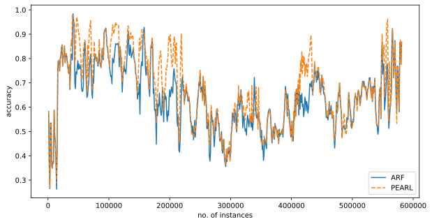
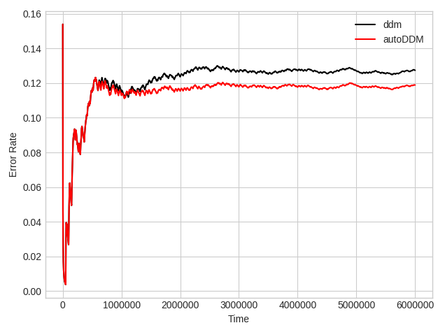

Tutorials#
Tutorial 1: Predicting Forest Cover Type using PEARL#
Dataset Information:
Forest cover type is natural resource inventory information often economically or legally impossible to collect. Vital to any private, state, or federal land management agency.
Collected from four wilderness areas located in the Roosevelt National Forest of northern Colorado.
Contains variables such as wilderness areas and soil type.
Available under the recurrent-data repo.
Code
%matplotlib notebook
from matplotlib import pyplot as plt
from matplotlib import animation
from skika.ensemble import adaptive_random_forest, pearl
class evaluate(object):
def __init__(self, classifier):
self.accuracy = 0
self.num_instances = 0
self.classifier = classifier
self.classifier.init_data_source("/your/path/recurrent-data/real-world/covtype.arff");
def __call__(self):
correct = 0
sample_freq = 1000
for count in range(0, sample_freq):
if not self.classifier.get_next_instance():
break
# test
prediction = self.classifier.predict()
actual_label = self.classifier.get_cur_instance_label()
if prediction == actual_label:
correct += 1
# train
self.classifier.train()
self.classifier.delete_cur_instance()
self.accuracy = correct / sample_freq
self.num_instances += 1000
return self.num_instances, self.accuracy
num_trees = 60
max_num_candidate_trees = 120
repo_size = 9000
edit_distance_threshold = 90
kappa_window = 50
lossy_window_size = 100000000
reuse_window_size = 0
max_features = -1
bg_kappa_threshold = 0
cd_kappa_threshold = 0.4
reuse_rate_upper_bound = 0.18
warning_delta = 0.0001
drift_delta = 0.00001
enable_state_adaption = True
enable_state_graph = True
arf_classifier = adaptive_random_forest(num_trees,
max_features,
warning_delta,
drift_delta)
arf = evaluate(arf_classifier)
pearl_classifier = pearl(num_trees,
max_num_candidate_trees,
repo_size,
edit_distance_threshold,
kappa_window,
lossy_window_size,
reuse_window_size,
max_features,
bg_kappa_threshold,
cd_kappa_threshold,
reuse_rate_upper_bound,
warning_delta,
drift_delta,
enable_state_adaption,
enable_state_graph)
pearl = evaluate(pearl_classifier)
fig = plt.figure()
x_arf = []
y_arf = []
x_pearl = []
y_pearl = []
max_samples = 580000
def frames_arf():
for i in range(max_samples):
yield arf()
def animate_arf(args):
x_arf.append(args[0])
y_arf.append(args[1])
return plt.plot(x_arf, y_arf, color='C0', linestyle='-', label='ARF')
def frames_pearl():
for i in range(max_samples):
yield pearl()
def animate_pearl(args):
x_pearl.append(args[0])
y_pearl.append(args[1])
return plt.plot(x_pearl, y_pearl, color='C1', linestyle='--', label='PEARL')
anim_arf = animation.FuncAnimation(fig, animate_arf, frames=frames_arf, interval=1000)
anim_pearl = animation.FuncAnimation(fig, animate_pearl, frames=frames_pearl, interval=1000)
plt.xlabel('no. instances')
plt.ylabel('accuracy')
F = plt.gcf()
Size = F.get_size_inches()
F.set_size_inches(Size[0]*1.5, Size[1]*1, forward=True)
plt.show()
Result:
Tutorial 2: Error rate comparison between AutoDDM and DDM on synthetic data stream#
Dataset Information:
AGRAWAL data stream generator.
Code
from skika.hyper_parameter_tuning.drift_detectors import AutoDDM
from skmultiflow.drift_detection import DDM
from skika.data.reccurring_concept_stream import RCStreamType, RecurringConceptStream, conceptOccurence
import matplotlib.pyplot as plt
import warnings
import numpy as np
import random
import collections
from skmultiflow.trees import HoeffdingTreeClassifier
warnings.filterwarnings('ignore')
plt.style.use("seaborn-whitegrid")
# Global variable
TRAINING_SIZE = 1
STREAM_SIZE = 6000000
grace = 1000
tolerance = 500
DRIFT_INTERVALS = [50000]
concepts = [0, 1, 2]
RANDOMNESS = 100
seed = random.randint(0, 10000)
keys = []
actuals = [0]
concept_chain = {0: 0}
current_concept = 0
for i in range(1, STREAM_SIZE + 1):
for j in DRIFT_INTERVALS:
if i % j == 0:
if i not in keys:
keys.append(i)
randomness = random.randint(0, RANDOMNESS)
d = i + ((randomness * 1) if (random.randint(0, 1) > 0) else (randomness * -1))
concept_index = random.randint(0, len(concepts) - 1)
while concepts[concept_index] == current_concept:
concept_index = random.randint(0, len(concepts) - 1)
concept = concepts[concept_index]
concept_chain[d] = concept
actuals.append(d)
current_concept = concept
i2 = i + 17000
keys.append(i2)
randomness = random.randint(0, RANDOMNESS)
d = i2 + ((randomness * 1) if (random.randint(0, 1) > 0) else (randomness * -1))
concept_index = random.randint(0, len(concepts) - 1)
while concepts[concept_index] == current_concept:
concept_index = random.randint(0, len(concepts) - 1)
concept = concepts[concept_index]
concept_chain[d] = concept
actuals.append(d)
current_concept = concept
x = collections.Counter(concept_chain.values())
print(x)
concept_0 = conceptOccurence(id=0, difficulty=6, noise=0,
appearences=x[0], examples_per_appearence=max(DRIFT_INTERVALS))
concept_1 = conceptOccurence(id=1, difficulty=6, noise=0,
appearences=x[1], examples_per_appearence=max(DRIFT_INTERVALS))
concept_2 = conceptOccurence(id=2, difficulty=6, noise=0,
appearences=x[2], examples_per_appearence=max(DRIFT_INTERVALS))
desc = {0: concept_0, 1: concept_1, 2: concept_2}
datastream = RecurringConceptStream(
rctype=RCStreamType.AGRAWAL,
num_samples=STREAM_SIZE,
noise=0,
concept_chain=concept_chain,
seed=seed,
desc=desc,
boost_first_occurance=False)
X_train = []
y_train = []
for i in range(0, TRAINING_SIZE):
X, y = datastream.next_sample()
X_train.append(X[0])
y_train.append(y[0])
X_train = np.array(X_train)
y_train = np.array(y_train)
ht_auto = HoeffdingTreeClassifier()
ht_auto.partial_fit(X_train, y_train)
ht_ddm = HoeffdingTreeClassifier()
ht_ddm.partial_fit(X_train, y_train)
n_global = TRAINING_SIZE # Cumulative Number of observations
d_auto = 0
d_ddm = 0
TP_auto= []
TP_ddm= []
FP_auto = []
FP_ddm = []
Delay_auto = []
Delay_ddm = []
grace_end_auto = n_global
grace_end_ddm = n_global
accuracy_auto = 0
accuracy_ddm = 0
acc_x = []
acc_y_auto = []
acc_y_ddm = []
ddm = DDM()
autoDDM = AutoDDM(tolerance=tolerance)
while datastream.has_more_samples():
n_global += 1
X_test, y_test = datastream.next_sample()
if (n_global % 1000 == 0):
acc_x.append(n_global)
acc_y_auto.append(1 - (accuracy_auto / n_global))
acc_y_ddm.append(1 - (accuracy_ddm / n_global))
y_predict_ddm = ht_ddm.predict(X_test)
ddm.add_element(y_test != y_predict_ddm)
accuracy_ddm += 1 if y_test == y_predict_ddm else 0
if (n_global > grace_end_ddm):
if ddm.detected_change():
d_ddm += 1
drift_point_ddm = key = min(actuals, key=lambda x: abs(x - n_global))
if (drift_point_ddm != 0 and drift_point_ddm not in TP_ddm and abs(drift_point_ddm - n_global) <= tolerance):
Delay_ddm.append(abs(n_global - drift_point_ddm))
TP_ddm.append(drift_point_ddm)
ht_ddm = HoeffdingTreeClassifier()
grace_end_ddm = n_global + grace
else:
FP_ddm.append(drift_point_ddm)
ht_ddm.partial_fit(X_test, y_test)
y_predict_auto = ht_auto.predict(X_test)
autoDDM.add_element(y_test != y_predict_auto, n_global)
accuracy_auto += 1 if y_test == y_predict_auto else 0
if (n_global > grace_end_auto):
if autoDDM.detected_change():
d_auto += 1
drift_point_auto = key = min(actuals, key=lambda x: abs(x - n_global))
if (drift_point_auto != 0 and drift_point_auto not in TP_auto and abs(drift_point_auto - n_global) <= tolerance):
Delay_auto.append(abs(n_global - drift_point_auto))
TP_auto.append(drift_point_auto)
ht_auto = HoeffdingTreeClassifier()
autoDDM.detect_TP(n_global)
grace_end_auto = n_global + grace
else:
autoDDM.detect_FP(n_global)
FP_auto.append(drift_point_auto)
ht_auto.partial_fit(X_test, y_test)
print("Actual drifts:" + str(len(actuals)))
print("Number of drifts detected by AutoDDM: " + str(d_auto))
print("TP by AutoDDM:" + str(len(TP_auto)))
print("FP by AutoDDM:" + str(len(FP_auto)))
print("Mean Delay by AutoDDM:" + str(np.mean(Delay_auto)))
print("Accuracy by AutoDDM:" + str(accuracy_auto / STREAM_SIZE))
print("Number of drifts detected by DDM: " + str(d_ddm))
print("TP by DDM:" + str(len(TP_ddm)))
print("FP by DDM:" + str(len(FP_ddm)))
print("Mean Delay by DDM:" + str(np.mean(Delay_ddm)))
print("Accuracy by DDM:" + str(accuracy_ddm / STREAM_SIZE))
plt.plot(acc_x, acc_y_ddm, color='black', label='ddm')
plt.plot(acc_x, acc_y_auto, color='red', label='autoDDM')
plt.xlabel("Time")
plt.ylabel("Error Rate")
plt.legend()
plt.show()
Result:
Tutorial 3: Predicting Forest Cover Type using NACRE#
Dataset Information:
Same as Tutorial 1
Additional Instructions
NACRE requires an additional sequence predictor service.
The sequence predictor module is available at the sequence-prediction-service repo.
Code
import copy
from collections import deque
import math
from random import randrange
import time
import numpy as np
from sklearn.metrics import cohen_kappa_score
from skika.nacre import nacre_wrapper
# classification settings
np.random.seed(0)
stream_file_path = "./recurrent-data/real-world/covtype.arff"
sample_freq = 1000
# pearl specific params
num_trees = 60
max_num_candidate_trees = 120
repo_size = 9000
edit_distance_threshold = 90
kappa_window = 50
lossy_window_size = 100000000
reuse_window_size = 0
max_features = -1
bg_kappa_threshold = 0
cd_kappa_threshold = 0.4
reuse_rate_upper_bound = 0.18
warning_delta = 0.0001
drift_delta = 0.00001
poisson_lambda = 6
random_state = 0
# nacre specific params
grpc_port = 50051 # port number for the sequence prediction grpc service
pro_drift_window = 100 # number of instances must be seen for proactive drift adaptation
seq_len = 8 # sequence length for sequence predictor
backtrack_window = 25 # number of instances per eval when backtracking
stability_delta = 0.001
hybrid_delta = 0.001
classifier = nacre_wrapper.nacre_wrapper(
seed=0,
stream_file_path="/your/path/covtype.arff",
num_trees=60,
max_num_candidate_trees=120,
repo_size=9000,
edit_distance_threshold=90,
kappa_window=50,
lossy_window_size=100000000,
reuse_window_size=0,
max_features=-1,
bg_kappa_threshold=0,
cd_kappa_threshold=0.4,
reuse_rate_upper_bound=0.18,
warning_delta=0.0001,
drift_delta=0.00001,
poisson_lambda=6,
random_state=0,
pro_drift_window=100,
backtrack_window=25,
stability_delta=0.001,
hybrid_delta=0.001,
seq_len=8)
correct = 0
window_actual_labels = []
window_predicted_labels = []
start_time = time.process_time()
while classifier.get_next_instance():
# test
prediction = classifier.predict()
actual_label = classifier.get_cur_instance_label()
if prediction == actual_label:
correct += 1
window_actual_labels.append(actual_label)
window_predicted_labels.append(prediction)
classifier.train()
# log performance
if count % sample_freq == 0 and count != 0:
accuracy = correct / sample_freq
elapsed_time = time.process_time() - start_time + classifier.cpt_runtime
kappa = cohen_kappa_score(window_actual_labels, window_predicted_labels)
candidate_tree_size = classifier.get_candidate_tree_group_size()
tree_pool_size = classifier.get_tree_pool_size()
print(f"{count},{accuracy},{kappa},{candidate_tree_size},{tree_pool_size},{str(elapsed_time)}")
correct = 0
window_actual_labels = []
window_predicted_labels = []
Tutorial 4: Transfer Learning with AOTrAdaBoost#
Dataset Information:
The bike datasets are real-world datasets available at the transfer-data repo.
The task is to classify whether rental bikes are in low or high demand at different times in different cities. We use the configuration of weekdays from Washington D.C. as the source and weekends in London as the target, whereby both source and target datasets contain concept drifts.
Code
from skika.aotradaboost import trans_tree_wrapper
sample_freq = 100
num_trees = 60
rf_lambda = 1
random_state = 0
warning_delta = 0.0001
drift_delta = 0.00001
kappa_window = 60
least_transfer_warning_period_instances_length = 300
instance_store_size = 8000
num_diff_distr_instances = 200
bbt_pool_size = 40
eviction_interval = 1000000
transfer_kappa_threshold = 0.1
transfer_gamma = 8
transfer_match_lowerbound = 0.0
boost_mode = "atradaboost" # i.e. aotradaboost
disable_drift_detection = False
data_file_path = "/your/path/transfer-data/bike/dc-weekend-source.arff;/your/path/transfer-data/bike/weekday.arff";
classifier = trans_tree_wrapper(
len(data_file_path.split(";")),
random_state,
kappa_window,
warning_delta,
drift_delta,
least_transfer_warning_period_instances_length,
instance_store_size,
num_diff_distr_instances,
bbt_pool_size,
eviction_interval,
transfer_kappa_threshold,
transfer_gamma,
transfer_match_lowerbound,
boost_mode,
num_trees,
disable_drift_detection)
data_file_list = data_file_path.split(";")
prequential_evaluation_transfer(
classifier=classifier,
data_file_paths=data_file_list,
sample_freq=sample_freq,
expected_accuracies=expected_accuracies)
class ClassifierMetrics:
def __init__(self):
self.correct = 0
self.instance_idx = 0
def prequential_evaluation_transfer(
classifier,
data_file_paths,
sample_freq,
expected_accuracies):
classifier_metrics_list = []
for i in range(len(data_file_paths)):
classifier.init_data_source(i, data_file_paths[i])
classifier_metrics_list.append(ClassifierMetrics())
classifier_idx = 0
classifier.switch_classifier(classifier_idx)
metric = classifier_metrics_list[classifier_idx]
while True:
if not classifier.get_next_instance():
# Switch streams to simulate parallel streams
classifier_idx += 1
if classifier_idx >= len(data_file_paths):
break
classifier.switch_classifier(classifier_idx)
metric = classifier_metrics_list[classifier_idx]
print()
print(f"switching to classifier_idx {classifier_idx}")
continue
classifier_metrics_list[classifier_idx].instance_idx += 1
# test
prediction = classifier.predict()
actual_label = classifier.get_cur_instance_label()
if prediction == actual_label:
metric.correct += 1
# train
classifier.train()
log_metrics(
classifier_metrics_list[classifier_idx].instance_idx,
sample_freq,
metric,
classifier)
def log_metrics(count, sample_freq, metric, classifier):
if count % sample_freq == 0 and count != 0:
accuracy = round(metric.correct / sample_freq, 2)
print(f"{accuracy}")
metric.correct = 0
Tutorial 5: Transfer Learning with OPERA#
Dataset Information:
The original Fashion MNIST datasets are used as the source stream, and the target stream is generated with varying similarities by inverting all pixel values of v% of the classes. We denote these configurations as MNIST v% or Fashion MNIST v%, where v% indicates the dissimilarity between the domains. In addition, we apply a 2 by 2 filter on both MNIST and Fashion MNIST datasets for reasonable performance outputs from the random forest base learners with limited tree models.
Available at the transfer-data repo.
Code
from skika.transfer import opera_wrapper
sample_freq = 1000
num_trees = 100
rf_lambda = 1
random_state = 0
num_phantom_branches=30
squashing_delta=7
obs_period=1000
conv_delta=0.1
conv_threshold=0.15
obs_window_size=50
perf_window_size=5000
min_obs_period=2000
split_range=10
force_disable_patching=False
force_enable_patching=False
grow_transfer_surrogate_during_obs=False
# datasets separated by the semi-colons
data_file_path="/your/path/transfer-data/fashion-mnist/flip20/source.arff;/your/path/transfer-data/fashion-mnist/flip20/target.arff";
classifier = opera_wrapper(
len(data_file_path.split(";")),
random_state,
num_trees,
rf_lambda,
num_phantom_branches,
squashing_delta,
obs_period,
conv_delta,
conv_threshold,
obs_window_size,
perf_window_size,
min_obs_period,
split_range,
grow_transfer_surrogate_during_obs,
force_disable_patching,
force_enable_patching)
data_file_list = data_file_path.split(";")
prequential_evaluation_transfer(
classifier=classifier,
data_file_paths=data_file_list,
max_samples=max_samples,
sample_freq=sample_freq,
expected_accuracies=expected_accuracies)
class ClassifierMetrics:
def __init__(self):
self.correct = 0
self.instance_idx = 0
def prequential_evaluation_transfer(
classifier,
data_file_paths,
max_samples,
sample_freq,
expected_accuracies):
classifier_metrics_list = []
for i in range(len(data_file_paths)):
classifier.init_data_source(i, data_file_paths[i])
classifier_metrics_list.append(ClassifierMetrics())
classifier_idx = 0
classifier.switch_classifier(classifier_idx)
metric = classifier_metrics_list[classifier_idx]
while True:
if not classifier.get_next_instance():
# Switch streams to simulate parallel streams
classifier_idx += 1
if classifier_idx >= len(data_file_paths):
break
classifier.switch_classifier(classifier_idx)
metric = classifier_metrics_list[classifier_idx]
print()
print(f"switching to classifier_idx {classifier_idx}")
continue
classifier_metrics_list[classifier_idx].instance_idx += 1
# test
prediction = classifier.predict()
actual_label = classifier.get_cur_instance_label()
if prediction == actual_label:
metric.correct += 1
# train
classifier.train()
log_metrics(
classifier_metrics_list[classifier_idx].instance_idx,
sample_freq,
metric,
classifier)
def log_metrics(count, sample_freq, metric, classifier):
if count % sample_freq == 0 and count != 0:
accuracy = round(metric.correct / sample_freq, 2)
# Phantom tree outputs
f = int(classifier.get_full_region_complexity())
e = int(classifier.get_error_region_complexity())
c = int(classifier.get_correct_region_complexity())
print(f"{count},{accuracy},{f},{e},{c}")
metric.correct = 0